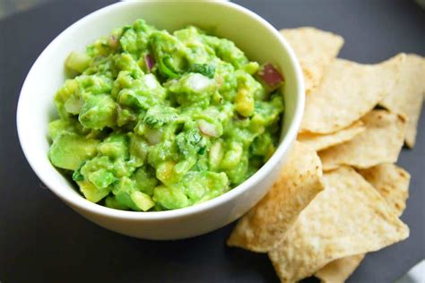

Guacamole

Description
It is an avocado-based dip, spread, or salad first developed in Mexico.
In addition to its use in modern Mexican cuisine, it has become part of international and American cuisine as a dip, condiment and salad ingredient.
Ingredients
- 3 avocados - peeled, pitted, and mashed
- 1 lime, juiced
- 1 teaspoon salt
- ½ cup diced onion
- 3 tablespoons chopped fresh cilantro
- 2 roma (plum) tomatoes, diced
- 1 teaspoon minced garlic
- 1 pinch ground cayenne pepper (Optional)
Steps
- In a medium bowl, mash together the avocados, lime juice, and salt. Mix in onion, cilantro, tomatoes, and garlic
- Stir in cayenne pepper
- Refrigerate 1 hour for best flavor, or serve immediately